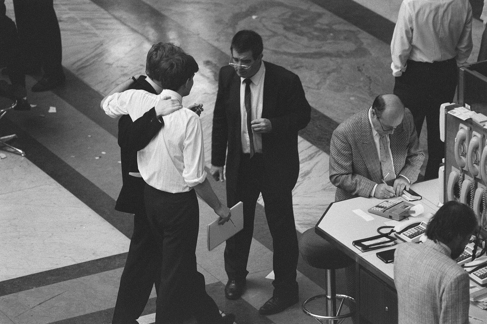

Nasdaq oltre il −5% in un giorno: tutte le volte dal 2011 e cosa è successo dopo
Dal 2011 il Nasdaq ha perso più del 5% in una sola seduta dodici volte, compresa quella di oggi. Ogni volta c'era una causa diversa: il debito americano, la pandemia, l'inflazione, i dazi. Ecco cosa è successo dopo, caso per caso.

In sintesi
- Dal 2011 il Nasdaq ha perso più del 5% in una seduta 12 volte, in 7 episodi; dal 1971 50 volte.
- Il calo più forte di sempre è del 16 marzo 2020: −12,32%, anche peggio del 19 ottobre 1987.
- Nei cinque episodi conclusi il minimo è arrivato quasi sempre dopo il crollo, da 0 a 74 sedute più tardi.
- Il ritorno al livello di prima ha richiesto da 7 a 165 sedute.
- Un anno dopo il Nasdaq era sempre più in alto, ma nel 2000 e nel 2008 la discesa era continuata per mesi.
Venerdì 20 novembre 2026 il Nasdaq Composite ha chiuso a 22.617,73 punti, −5,28%: è la seconda seduta oltre il −5% in tre settimane, dopo il −5,52% del 5 novembre. Dal 2011 è successo dodici volte. Nella storia dell'indice, che parte nel 1971, i giorni così sono stati cinquanta, e tre su cinque si concentrano in due periodi: lo scoppio della bolla delle dot-com nel 2000-2001 (venti sedute) e la crisi finanziaria del 2008 (dieci). Abbiamo ripreso tutti i casi dell'ultimo quindicennio per capire perché sono avvenuti e cosa è successo dopo.
Le dodici sedute dal 2011
| Data | Nasdaq | Causa principale |
|---|---|---|
| 4 agosto 2011 | −5,08% | Timori di recessione e crisi del debito europeo |
| 8 agosto 2011 | −6,90% | Primo declassamento del debito degli Stati Uniti |
| 18 agosto 2011 | −5,22% | Morgan Stanley taglia le stime: «pericolosamente vicini alla recessione» |
| 9 marzo 2020 | −7,29% | Covid e guerra dei prezzi del petrolio |
| 12 marzo 2020 | −9,43% | Stop ai viaggi dall'Europa, il Covid diventa pandemia |
| 16 marzo 2020 | −12,32% | La Fed porta i tassi a zero, il panico non si ferma |
| 11 giugno 2020 | −5,27% | Paura della seconda ondata e Fed pessimista |
| 13 settembre 2022 | −5,16% | Inflazione all'8,3%: la Fed dovrà alzare di più |
| 3 aprile 2025 | −5,97% | I dazi del «Liberation Day» |
| 4 aprile 2025 | −5,82% | La Cina risponde con dazi del 34% |
| 5 novembre 2026 | −5,52% | Svanisce il rally post-voto, dubbi sull'intelligenza artificiale |
| 20 novembre 2026 | −5,28% | Chip a picco, Nvidia −14%, Fed pronta ad alzare i tassi |
Le dodici sedute si raggruppano in sette episodi. Quasi mai un crollo arriva da solo: in agosto 2011, marzo 2020 e aprile 2025 i giorni oltre il −5% sono stati due o tre, a pochi giorni di distanza. E le cause sono molto diverse fra loro: un evento politico, una pandemia, un dato sull'inflazione, una decisione commerciale. Il filo comune è la sorpresa: il mercato scende così tanto quando deve rifare in poche ore i conti su qualcosa che dava per scontato.
Agosto 2011: gli Stati Uniti perdono la tripla A
L'estate del 2011 è quella della crisi del debito europeo e del lungo scontro al Congresso americano sul tetto del debito. Giovedì 4 agosto il Nasdaq perde il 5,08% per i timori di una nuova recessione e per la situazione dell'Europa: per il Dow Jones è il giorno peggiore dal 2008. Venerdì 5, a mercati chiusi, l'agenzia Standard & Poor's toglie agli Stati Uniti il massimo giudizio sul debito, la tripla A, per la prima volta nella storia. Lunedì 8 agosto il Nasdaq cede il 6,90%, la peggiore seduta dal dicembre 2008. Il 18 agosto arriva il terzo colpo (−5,22%): Morgan Stanley taglia le stime di crescita e scrive che Stati Uniti ed Europa sono «pericolosamente vicini» alla recessione.
Cosa è successo dopo. Già il 9 agosto il Nasdaq era risalito del 5,29%. Ma il minimo è arrivato il 3 ottobre 2011, a −13,3% rispetto al 3 agosto. L'indice è tornato al livello di prima del crollo il 24 ottobre 2011, e un anno dopo l'ultima seduta nera era salito del 29,2%. La recessione temuta negli Stati Uniti non arrivò.
Marzo 2020: la pandemia
È l'episodio più violento. Lunedì 9 marzo, con il Covid che si diffonde in Europa, si rompe l'accordo fra Arabia Saudita e Russia sulla produzione di petrolio e il greggio perde quasi il 25%: il Nasdaq scende del 7,29% e a Wall Street scatta per la prima volta da oltre vent'anni il circuit breaker (interruttore automatico), la sospensione degli scambi. Giovedì 12 marzo, dopo l'annuncio del presidente Trump di uno stop di trenta giorni agli ingressi dall'Europa, il Nasdaq perde il 9,43%: per il Dow Jones è il giorno peggiore dal 1987. Domenica 15 la Federal Reserve porta i tassi a zero e annuncia acquisti di titoli per 700 miliardi di dollari, ma lunedì 16 il panico vince lo stesso: −12,32%, il calo giornaliero più forte nella storia del Nasdaq.
Cosa è successo dopo. Il giorno successivo il Nasdaq è salito del 6,23%, e il 24 marzo dell'8,12%. Il minimo è arrivato il 23 marzo 2020, a −20,0% rispetto al 6 marzo. Da lì la risalita è stata rapidissima, spinta dagli interventi della Fed e dalla corsa dei titoli tecnologici che beneficiavano del lavoro e degli acquisti da casa: il livello del 6 marzo è stato recuperato il 17 aprile 2020 e il record di febbraio l'8 giugno 2020. Un anno dopo il 16 marzo il Nasdaq era quasi raddoppiato (+95,1%).
💡 Impara: cos'è il circuit breaker
Il circuit breaker (interruttore automatico) è una pausa obbligatoria degli scambi che scatta quando la Borsa scende troppo in fretta. A Wall Street il primo livello si attiva quando l'S&P 500 perde il 7% rispetto alla chiusura precedente: le contrattazioni si fermano per 15 minuti, per dare tempo agli investitori di valutare le notizie invece di vendere d'istinto. Nel marzo 2020 è scattato quattro volte in due settimane, dopo oltre vent'anni senza interventi.
11 giugno 2020: la paura della seconda ondata
Tre mesi dopo, il Nasdaq aveva appena superato per la prima volta i 10.000 punti. L'11 giugno perde il 5,27% in un giorno: in Texas, Florida e Arizona i contagi risalgono (il Texas registra il numero più alto di casi dall'inizio della pandemia) e il giorno prima la Fed aveva diffuso previsioni molto prudenti, con una disoccupazione attesa al 9,3% a fine anno. Una parte degli analisti lesse il crollo anche come una pausa dopo una risalita troppo veloce.
Cosa è successo dopo. È il caso più breve: quella seduta è rimasta il punto più basso e il Nasdaq ha recuperato il livello precedente in 7 sedute, il 22 giugno 2020. Un anno dopo era salito del 48,2%.
13 settembre 2022: l'inflazione che non scendeva
Nel 2022 l'inflazione americana era al livello più alto da quarant'anni e la Fed stava alzando i tassi molto in fretta. Dopo quattro sedute di rialzo, molti investitori si erano convinti che il picco dei prezzi fosse passato. Il 13 settembre il dato di agosto li smentisce: inflazione all'8,3% su un anno e, soprattutto, inflazione di fondo (senza alimentari ed energia) salita al 6,3% dal 5,9% di luglio. I mercati scommettono su rialzi dei tassi più forti, il rendimento del titolo di Stato a due anni sale al livello più alto dal 2007 e il Nasdaq perde il 5,16%.
Cosa è successo dopo. È l'eccezione della serie. Un mese più tardi l'indice era sceso di un altro 10,5%, e il minimo è arrivato solo il 28 dicembre 2022, a −16,7% rispetto al giorno prima del crollo. Il livello del 12 settembre è stato recuperato il 10 maggio 2023, dopo 165 sedute, e il record del novembre 2021 solo a fine febbraio 2024. Il crollo era arrivato in mezzo a un mercato ribassista già in corso: non ne segnava la fine.
3 e 4 aprile 2025: i dazi del «Liberation Day»
Mercoledì 2 aprile 2025, a Borse chiuse, il presidente Trump annuncia dazi su quasi tutti i Paesi del mondo, molto più alti del previsto. Giovedì 3 il Nasdaq perde il 5,97%, la seduta peggiore da cinque anni. Venerdì 4 la Cina risponde con dazi del 34% su tutte le merci americane, il presidente della Fed Jerome Powell definisce i dazi «molto più ampi del previsto» e il Nasdaq cede un altro 5,82%, entrando in mercato ribassista.
Cosa è successo dopo. Il minimo è arrivato l'8 aprile 2025 (−13,3% rispetto al 2 aprile). Il giorno dopo Trump sospende per novanta giorni gran parte dei dazi e il Nasdaq sale del 12,16%, la miglior seduta dal 2001. L'indice è tornato al livello di prima in 19 sedute, il 1° maggio 2025, ha segnato un nuovo record il 27 giugno 2025 e un anno dopo era salito del 45,2%.
Novembre 2026: due volte in tre settimane
Il 5 novembre il Nasdaq ha perso il 5,52%: il giorno prima i mercati avevano festeggiato la fine dell'incertezza elettorale, poi l'attenzione si è spostata sul costo degli investimenti nell'intelligenza artificiale, con Qualcomm in calo del 9% dopo previsioni deboli. Dopo un breve recupero, fino all'11 novembre, le vendite sono riprese con le dimissioni di Jensen Huang da Nvidia, la stretta americana sull'export di chip, il debutto di Anthropic e una Fed orientata a rialzare i tassi. Oggi il secondo crollo, raccontato nella nostra cronaca della seduta: dalla vigilia del 5 novembre l'indice ha perso il 12,1%, ed è il 18,1% sotto il record del 6 ottobre.
Cosa insegnano i numeri
| Episodio | Minimo successivo | Ritorno al livello di prima | Un anno dopo |
|---|---|---|---|
| Agosto 2011 | −13,3% 3 ottobre 2011 | 24 ottobre 2011 56 sedute | +29,2% |
| Marzo 2020 | −20,0% 23 marzo 2020 | 17 aprile 2020 28 sedute | +95,1% |
| Giugno 2020 | −5,3% 11 giugno 2020 | 22 giugno 2020 7 sedute | +48,2% |
| Settembre 2022 | −16,7% 28 dicembre 2022 | 10 maggio 2023 165 sedute | +19,7% |
| Aprile 2025 | −13,3% 8 aprile 2025 | 1° maggio 2025 19 sedute | +45,2% |
Quattro cose emergono dalla tabella. La prima: il giorno del crollo raramente è il punto più basso. Solo nel giugno 2020 lo è stato; negli altri casi l'indice è sceso ancora, da pochi giorni a tre mesi dopo. La seconda: i rimbalzi più forti arrivano negli stessi giorni del panico, come il +9,35% del 13 marzo 2020 o il +12,16% del 9 aprile 2025. Chi vende nel momento peggiore rischia di perdere anche quei giorni. La terza: i tempi di recupero cambiano moltissimo, da sette sedute a quasi otto mesi, e dipendono da cosa ha causato il crollo e da come hanno reagito banca centrale e governo. La quarta: in tutti e cinque gli episodi conclusi, un anno dopo il Nasdaq era più in alto rispetto alla chiusura del giorno nero.
💡 Impara: perché i crolli arrivano a grappolo
Gli economisti chiamano volatility clustering (concentrazione della volatilità) la tendenza dei grandi movimenti di Borsa a presentarsi in gruppo: dopo un giorno molto agitato è più probabile che ne arrivi un altro, sia al ribasso sia al rialzo. Succede perché le notizie che scatenano il panico richiedono tempo per essere capite, e perché molti investitori, costretti a ridurre il rischio, vendono per più giorni di seguito. Per questo dopo un crollo del 5% è normale vedere anche sedute di forte rialzo.
Cinque casi però sono pochi, e il passato non garantisce nulla. Basta allargare lo sguardo per trovare storie diverse. Dopo il −9,67% del 14 aprile 2000, nel pieno dello scoppio della bolla delle dot-com, il Nasdaq era sceso di un altro 42% un anno dopo e ha toccato il minimo solo nell'ottobre 2002, il 66% più in basso. Dopo il −9,14% del 29 settembre 2008, durante la crisi finanziaria, è sceso di un altro 36% fino al marzo 2009. La differenza l'hanno fatta le cause: quando il crollo nasce da uno shock improvviso e i rimedi arrivano in fretta, il recupero è stato rapido; quando segnala un problema profondo dell'economia o valutazioni troppo alte, la discesa è durata a lungo. Capire in quale delle due situazioni ci si trova è esattamente la domanda che il mercato si sta facendo in queste settimane. Questo articolo non è un consiglio di investimento.
Nota metodologica: variazioni, minimi, date di recupero e rendimenti a un anno sono calcolati da Alma Finanza sulle chiusure giornaliere del Nasdaq Composite fornite da Yahoo Finance, dal 5 febbraio 1971 al 20 novembre 2026. «Minimo successivo» è la chiusura più bassa nelle 300 sedute successive all'ultima seduta oltre il −5% dell'episodio, misurata rispetto alla chiusura del giorno prima del primo crollo; «ritorno al livello di prima» è la prima chiusura uguale o superiore a quella, con le sedute contate dal primo crollo; «un anno dopo» è la variazione dopo 252 sedute dalla chiusura dell'ultima seduta nera. Le cause sono ricostruite da AP, CNN, NPR, Reuters, CNBC, Fortune e Yahoo Finance dell'epoca; per il 5 novembre 2026 dalla nostra cronaca di quel giorno. La regola del circuit breaker è quella in vigore sul mercato americano.